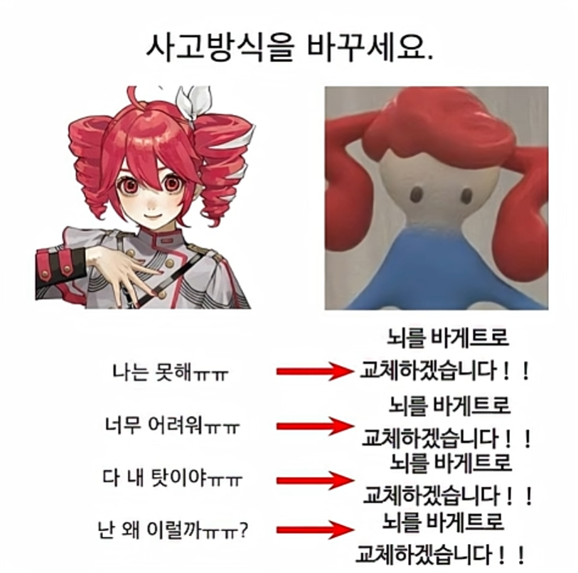
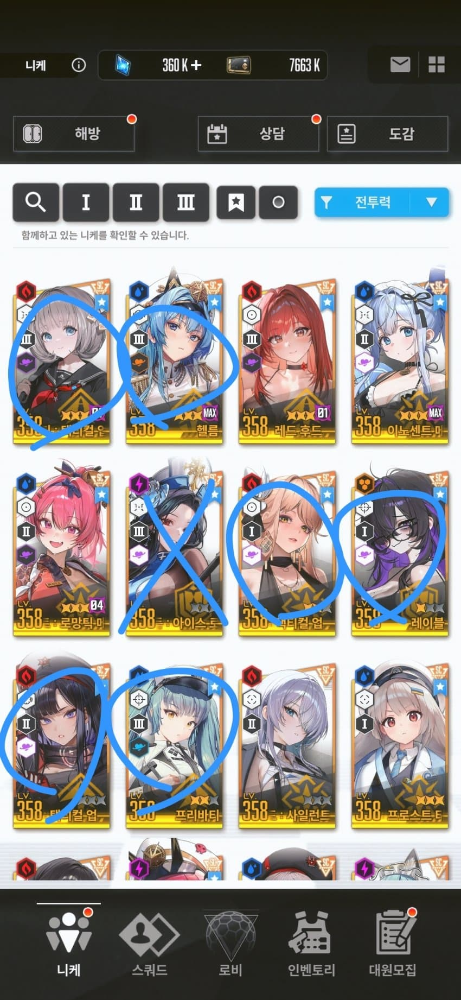
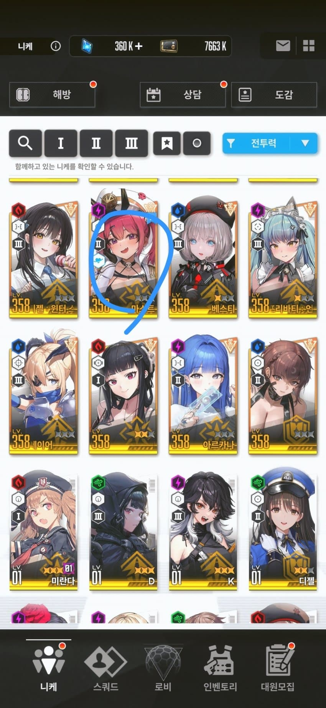
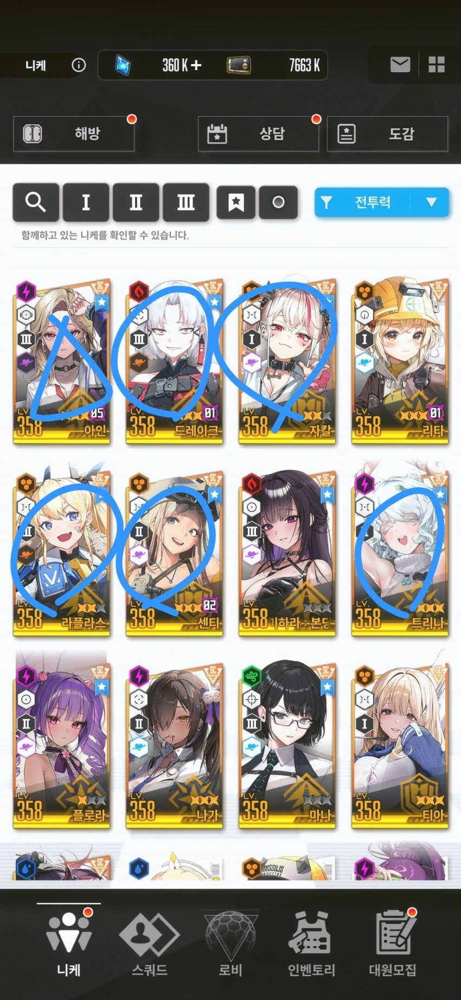
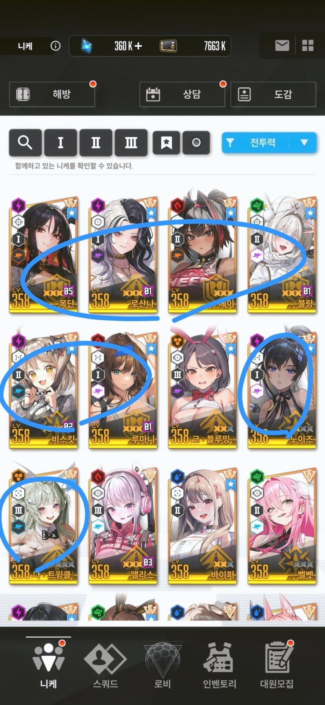
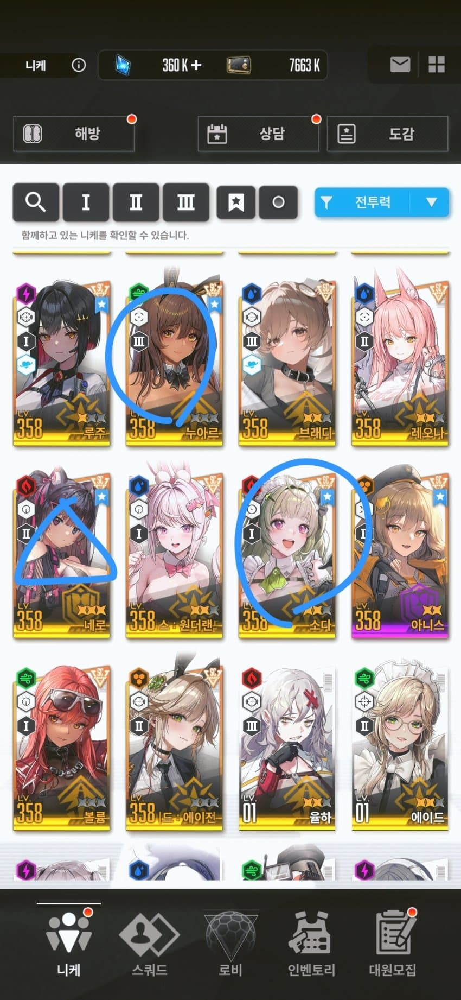

3.5주년 유입이라면 이 글은 일단 참고만 하고 스테이지용 세목크라스메신, 크라켄 나버흑, 하드용 레후를 키우고 나서 다시한번 찾아와서 보는걸 추천함


엘리시온
베스티,은화,엠마 : 택티컬 업 , 마스트 = 고투자 최고효율, 저투자 고효율인 앱솔덱에서 쓰는 파츠들임
이중에서도 특히 베스티는 다른 구성에 넣어도 위력이 강한 사기캐임
클이든은 한정이라 못뽑는다
헬름 = 버충의 신, 어떤 덱에도 들어갈 수 있는 만능 버충기계임
리크루트 포인트로 돌파를 뚫어주자
프리바티(애장품) = 일섬+기절로 조커픽이 가능함
레이블 = 챔레나 전격막이
위시 우선도 : 베스티은화엠마 택티컬업,헬름,프리바티 -> 은화 엠마 둘중 아무거나 명함 후 마스트or레이블 교체-> 마스트or레이블 명함후 못뽑은것 위시, 마스트 레이블 둘다명함획득시 원상복구

미사일스
아인 = 자칼블랑에 붙여 쓸 수는 있지만 콜라보한정인 웡이 없으면 그닥 고성능은 아님
단, 하드스테이지에서 단독으로 써도 강해서 뽑는걸 추천
드레이크 = 버충도 쏠쏠하고 샷건덱 토템버퍼로 좋음
로드투빌런 이벤트로 2돌 만들어주니 위시는 나중에
자칼 = 스레나 인권캐
자세한 설명은 공략탭 자블덱의 이해 참고
라플라스(애장품) = 버충의 신, 어떤 덱에도 들어갈 수 있음
센티 = 버충용/스턴대비 스페어2버
트리나 = 홍북이 파츠로 쓰거나 목단에 붙여쓸수 있음
버충도 잘 해줌
위시 우선도 : 아인,자칼,라플,트리나,센티 -> 센티or트리나 명함 후 드레이크 교체


테트라
목단 = 통상 중 몇안되는 인권캐임 모든 컨텐츠에서 다 쓰임
반드시 2돌 최우선으로해줄것
로산나 = 위에 서술한 앱솔덱에 쓰기도 하고, 홍북이와 쓸수도 있으며 각종 조합을 카운터치는 용도로 주로 쓰임
베이(애장) = 보통 목단과 같이 쓰며 모든 데미지를 균등분배해서 받기때문에 안정성을 높여 줌
현존 최고승률 덱 목베비스 파츠
블랑 = 주로 자칼과 같이 조합 짜는 자블덱 파츠
자세한 설명은 공략탭 자블덱의 이해 참조
비스킷 = 아군 방어형 니케를 일시적으로 무적상태로 만들어 버티게 해주는 역할
목베비스 조합이나 늦버 신데, 노아 비스킷 조합등 다양하게 사용가능
루마니, 노이즈 = 무난한 성능으로 항상 잘 쓰임.
바소다, 누아르 = 샷건덱 파츠
네로 = 지금으로선 잘 안 나오는 픽이긴 한데 뽑아 두면 언젠가 쓸수있을듯함
소다 = 고점의 악마 소다팝 좌살박도를 경험해보자
운빨로 모든것이 좌우되는 덱을 짤때 쓰임
위시 우선순위 : 목단,로산나,블랑,베이,비스킷 -> 로 블 비 명함후 루마니 노이즈 소다 교체
루마니 노이즈 소다 명함후 바소다 누아르 네로 교체
돌파 우선도
애장품 니케 2돌 우선->택스티,아인,로산나 등 딜러->레이블->나머지
솔레니케는 몰라 다른니부이가 공략써조